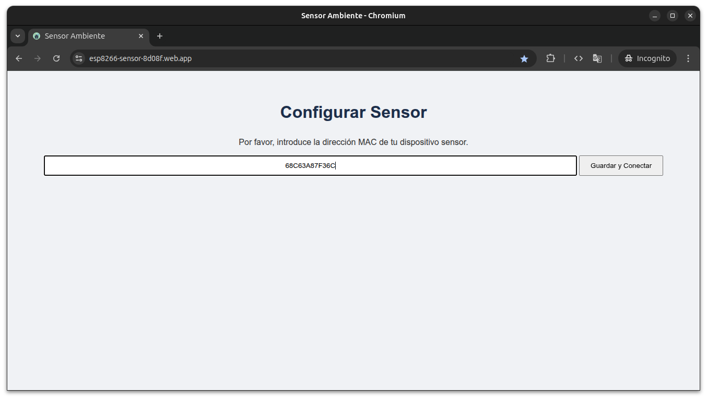
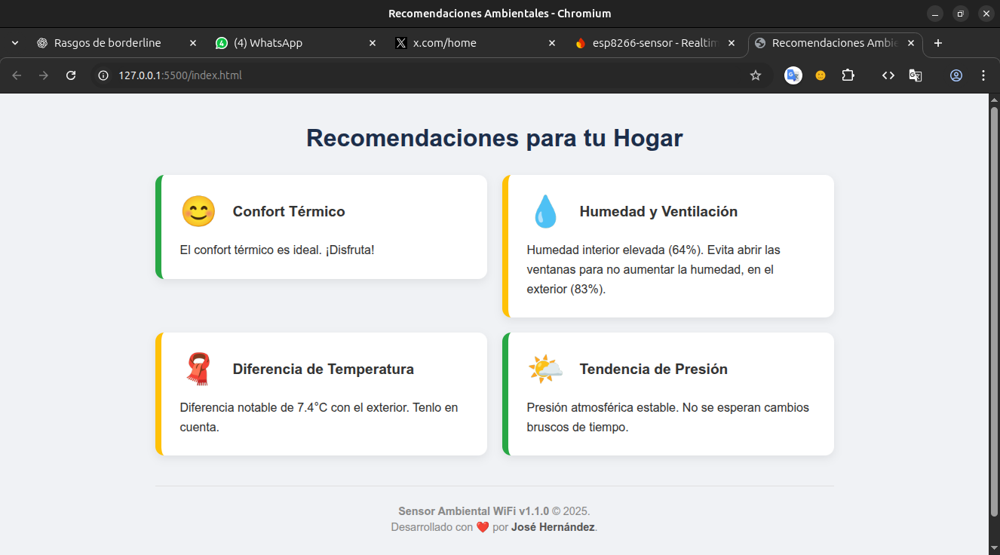
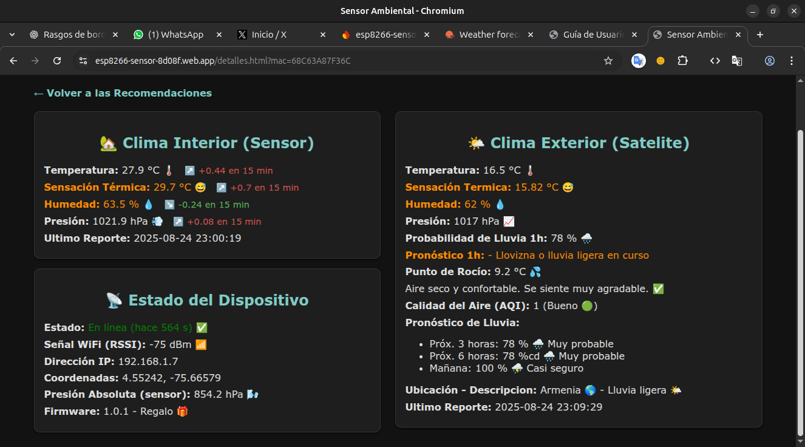

Paso 1: Obtener tus Coordenadas y Altura
Para que tu sensor ofrezca datos precisos, primero necesitamos saber exactamente dónde está ubicado.
Coordendas método con Google Maps (Recomendado)
- Abre Google Maps: Ve a google.com/maps.
- Busca tu dirección: Usa la barra de búsqueda para encontrar la ubicación de tu sensor.
- Obtén las Coordenadas: Haz clic derecho sobre el punto exacto en el mapa. Las coordenadas (ej: `4.55, -75.66`) aparecerán en la parte superior del menú. Haz clic sobre ellas para copiarlas. Pega las coordenadas en un bloc de notas para usarlas en el siguiente paso.
Altura método con Google Earth (Recomendado)
- Abre Google Earth: Ve a google.com/earth.
- Busca tus coordenadas: Usa la barra de búsqueda para encontrar la ubicación de tu sensor.Pega las coordenadas que copiaste de Google Maps en la barra de búsqueda. Presiona Enter. Google Earth te llevará volando directamente a esa ubicación.
- Obtén la altura: Mueve el cursor del ratón sobre el punto exacto en el mapa. Puedes usar la rueda del mouse para acercar o alejar la imagen. Haz clic derecho sobre la ubicación exacta, en el menú emergente, selecciona Get Info (Obtener Información), aparecerá un recuadro con el valor de Elevation (Elevación), es tu altura en metros. Anota este numero o haz clic derecho sobre el numero para copiarlo.
💡 Consejos Importantes
- Para las coordenadas usa un punto (.) como separador decimal, no una coma.
- ¡No olvides el signo negativo (-) para la longitud si estás en América!
- Para la altura, no uses punto para los miles, una altura aproximada es suficiente.
Paso 2: Guia de Configuración del Sensor Ambiental
Sigue estos pasos para conectar tu sensor a la red Wi-Fi de tu casa y empezar a ver las mediciones.
-
Antes de Empezar: Requisitos
Asegúrate de tener a mano lo siguiente:
- Fuente de Alimentacion: Un adaptador de corriente USB que suministre al menos 2 Amperios (2A) o 10 Vatios (10W). Un cargador de celular de buena calidad es perfecto.
- Cable USB: El sensor utiliza un conector tipo micro-USB.
-
Pasos para la Configuración
(Video: Mira el tutorial completo de configuración)
- Encender el Sensor: Conecta el sensor a la fuente de alimentación usando el cable USB. El sensor se encenderá automáticamente.
-
Conectarse a la Red del Sensor: El sensor
creará su propia red Wi-Fi temporal. Desde tu PC o celular,
busca las redes Wi-Fi disponibles y conéctate a la que se
llama Sensor Ambiente.
(Nota: Es normal que tu dispositivo te diga que esta red no tiene acceso a Internet. Ignora el aviso y mantente conectado). -
Acceder a la Página de Configuración: Una vez
conectado a la red Sensor Ambiente, abre tu
navegador web (Chrome, Safari, Firefox, etc.) e ingresa la
siguiente dirección en la barra de direcciones:
http://192.168.4.1 -
Registrar tus Datos: En la página que
aparece, rellena el formulario con la información de tu red
local:
- Red Wi-Fi Local (SSID): El nombre exacto de la red Wi-Fi de tu casa.
- Contraseña de la Red: La contraseña de la red Wi-Fi de tu casa.
- Nombre del Sensor: Un nombre para identificarlo (ejemplos: Pedro en Bogota, Sensor de la Sala, etc).
- Coordenadas y Altura: Introduce la ubicación para obtener datos más precisos.
- Guardar y Esperar: Haz clic en "Guardar". El sensor se reiniciará e intentará conectarse a la red de tu casa con los datos que le has proporcionado.
- Confirmar la Conexión (El LED): Sabrás que el sensor se ha conectado correctamente a tu red cuando el LED indicador muestre el siguiente patrón: un destello corto cada 4 segundos (la mayor parte del tiempo, el LED estará apagado).
- ⚠️ ¡Importante! Vuelve a tu Red Wi-Fi: Ahora que el sensor ya está en tu red, vuelve a conectar tu PC o celular a la red Wi-Fi normal de tu casa.
-
Cómo Ver los Datos del Sensor
Una vez que todo está configurado y tu PC o celular está en la misma red que el sensor, tienes dos formas de ver las mediciones:
- Método 1 (Recomendado solo para PC): Abre tu navegador y visita: http://sensor-ambiente.local
- Método 2 (Alternativo): En la página de sensor-ambiente.local, verás la dirección IP que tu router le asignó al sensor (por ejemplo: 192.168.1.7). Puedes escribir esa dirección IP directamente en el navegador de cualquier dispositivo (PC, tablet, celular) que esté en la misma red para ver la misma página de estado.
✨ ¡Novedad! Encuentra la ubicación perfecta
Para ayudarte a encontrar el mejor lugar para tu sensor, la página http://sensor-ambiente.local se actualiza automáticamente cada 10 segundos.
Mientras mueves el sensor por tu casa, observa el valor "Señal WiFi (RSSI)" en el dashboard:
-
Un valor más bajo (más negativo) indica una señal MÁS
FUERTE.
Por ejemplo, una señal de
-50 dBmes mucho mejor y más estable que una de-85 dBm. - Busca un lugar donde este número sea lo más cercano posible a cero para garantizar la mejor conexión a tu red.
Paso 3: Entendiendo el Dashboard
Una vez que tu sensor está configurado y en línea, puedes acceder a un completo dashboard web para visualizar todos los datos que recopila, tanto del interior de tu hogar como del clima exterior.
Accediendo al Dashboard Principal
-
Localiza el código único de tu tarjeta: Cada
sensor tiene un identificador único (conocido como dirección MAC).
Deberías tenerlo en una tarjeta o etiqueta que vino con tu
dispositivo (ejemplo:
68C63A87F36C). -
Ingresa a la página web: Abre tu navegador e
introduce la siguiente dirección:
https://esp8266-sensor-8d08f.web.app -
Configurar Sensor: Ingresa el código MAC de tu tarjeta en el cuadro de texto y haz clic en el botón Guardar y Conectar

💡 ¿No encuentras el código de tu tarjeta? ¡No hay problema!
- Mientras estés en la misma red Wi-Fi que el sensor, visita http://sensor-ambiente.local.
-
Busca el campo que dice "MAC". Verás un código
con dos puntos (ej:
68:C6:3A:87:F3:6C). -
Copia ese código y simplemente
elimina los dos puntos (:) para obtener el
formato correcto:
68C63A87F36C.
La Página Principal: Un Vistazo Rápido
La página principal te muestra la información más relevante a través de tarjetas interactivas. Haz clic en cualquiera de ellas para ir a la página de detalles.
Tarjeta de Confort Térmico
Te informa sobre la temperatura exacta del lugar donde está instalado el sensor, permitiéndote conocer el ambiente de la habitación de un solo vistazo.
Tarjeta de Humedad y Ventilación
Esta tarjeta inteligente te ayuda a decidir cuándo es un buen momento para ventilar tu hogar. Compara la humedad interior con la exterior y te ofrece recomendaciones para abrir o cerrar las ventanas, ayudando a prevenir la formación de moho y a mantener un ambiente saludable.
Tarjeta de Diferencia de Temperatura
Muestra la diferencia entre la temperatura de tu casa y la del exterior. Esta información es muy útil para evitar cambios bruscos de temperatura al salir o entrar, que a veces pueden causar resfriados por "choque térmico".
Tarjeta de Tendencia de Presión
Analiza los cambios en la presión atmosférica para ofrecer un pronóstico de probabilidad de lluvia. Una presión que baja rápidamente suele indicar la llegada de mal tiempo, mientras que una presión que sube indica tiempo estable.
⚠️ Un Pronóstico es una Probabilidad
Es muy importante entender que este dato es una probabilidad basada en la presión, no una certeza. La meteorología es compleja y la presión es solo uno de muchos factores. Úsalo como un indicador útil, pero siempre contrástalo con el pronóstico completo que encontrarás en la página de detalles.
La Página de Detalles: Profundizando en los Datos
Aquí encontrarás un desglose completo de todas las variables, el estado del dispositivo y un pronóstico más detallado.
Sección: Clima Interior
Muestra las mediciones actuales capturadas por tu sensor. Las flechas (↗️ ↘️ ➡️) y los valores (+/-) te indican la tendencia de cada variable en los últimos 15 minutos, para que sepas si la temperatura está subiendo, la humedad bajando, etc. La fecha del "Último Reporte" te confirma qué tan recientes son los datos.
Sección: Clima Exterior
Esta sección obtiene datos de un servicio meteorológico satelital para tu ubicación. Te ofrece una visión completa del tiempo afuera, incluyendo la sensación térmica, la calidad del aire (AQI) y, lo más importante, un pronóstico de lluvia a corto y medio plazo.
🌧️ Sobre el Pronóstico de Lluvia
Nuevamente, recuerda que los porcentajes representan la probabilidad de que ocurra una precipitación en ese periodo. Un 80% es una probabilidad muy alta, ¡pero no una garantía absoluta! Es la mejor estimación basada en los datos disponibles.
Sección: Estado del Dispositivo
Este es el centro de diagnóstico de tu sensor. Aquí puedes verificar:
- Estado: Si está conectado y enviando datos correctamente.
- Señal WiFi (RSSI): La calidad de tu conexión a internet (recuerda, un número más cercano a 0 es mejor).
- Dirección IP: Útil para acceder localmente al sensor.
- Presión Absoluta (sensor): Es la lectura de presión "cruda" del sensor antes de ser ajustada al nivel del mar.
- Firmware: La versión del software que está corriendo tu dispositivo.
Paso 4: Acceso Rápido - Instala el Dashboard en tu Celular
Para tener un acceso instantáneo a los datos de tu sensor, puedes instalar el dashboard directamente en la pantalla de inicio de tu celular. ¡Se comportará como una aplicación nativa, sin necesidad de abrir el navegador y escribir la dirección cada vez!
📱 Para Android (usando Google Chrome)
- Abre el dashboard en Chrome: Visita la página web de tu sensor con la dirección completa y luego introduce el código MAC de tu tarjeta. https://esp8266-sensor-8d08f.web.app
- Abre el menú: Toca el ícono de los tres puntos verticales (⋮) en la esquina superior derecha del navegador.
- Selecciona "Instalar aplicación": Busca en el menú la opción que dice "Instalar aplicación" o, en versiones más antiguas, "Agregar a la pantalla principal".
- Confirma la instalación: Aparecerá una ventana emergente. Simplemente toca en "Instalar".
- ¡Listo! En unos segundos, el ícono del sensor aparecerá en tu pantalla de inicio, listo para ser usado como cualquier otra app.
📱 Para iPhone / iPad (usando Safari)
(Nota: Este proceso solo funciona con el navegador Safari en iOS)
- Abre el dashboard en Safari: Visita la página web de tu sensor con la dirección completa y luego introduce el código MAC de tu tarjeta. https://esp8266-sensor-8d08f.web.app
- Toca el ícono de Compartir: Es el ícono cuadrado con una flecha apuntando hacia arriba ( ) que se encuentra en la barra de menú inferior.
- Busca la opción "Agregar a inicio": Desliza hacia arriba en el menú que apareció y busca la opción con un ícono de un más (+) que dice "Agregar a inicio" o "Add to Home Screen".
- Confirma los detalles: Podrás editar el nombre con el que aparecerá en tu pantalla. Toca "Agregar" (Add) en la esquina superior derecha.
- ¡Listo! El ícono del dashboard aparecerá en tu pantalla de inicio, como si fuera una app descargada de la App Store.
💡 ¿Por qué hacer esto?
Al instalar la app en tu celular, obtienes una experiencia más fluida, de pantalla completa y, lo más importante, un acceso mucho más rápido a tus datos. ¡Pruébalo!